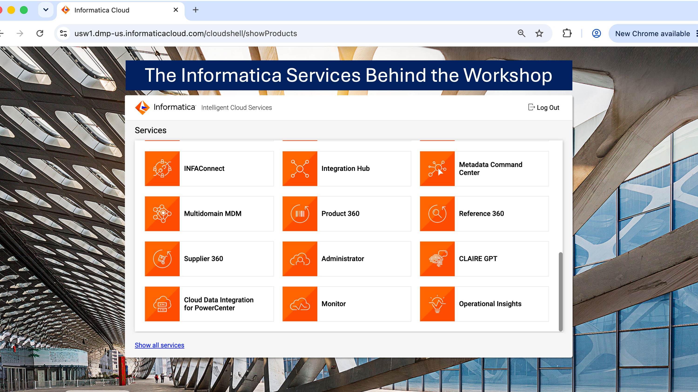
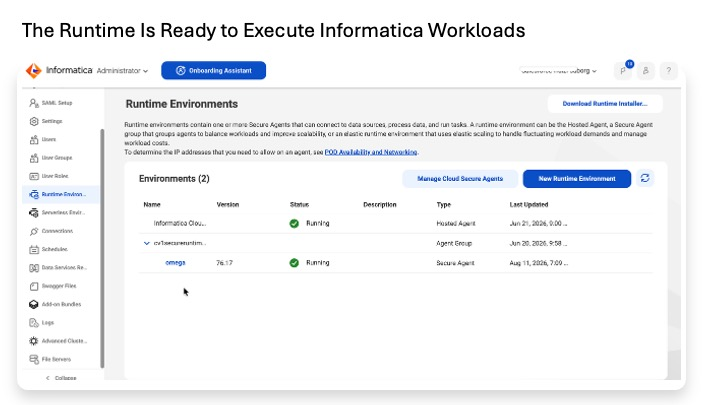
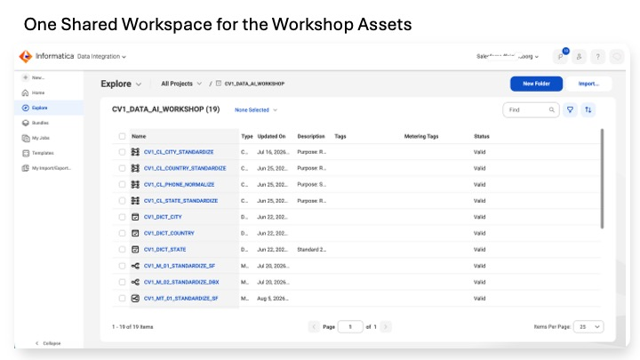
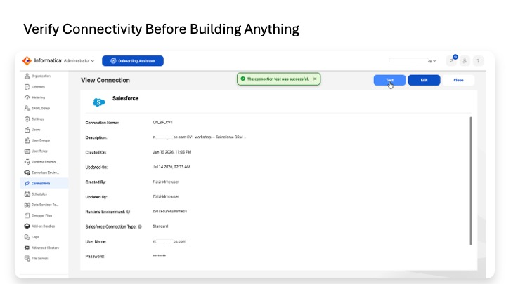
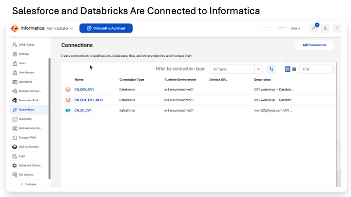

Lab 0
Prepare the workshop environment. We load the sample customer data into Salesforce and Databricks, create and test the Informatica connections to those systems, confirm the Informatica runtime is available, and verify that Salesforce Data 360 can be opened.
In short: by the end of this lab, the systems can see each other and the sample data needed by the later labs is in place.

The workshop uses several services within Informatica IDMC for different jobs: integration, data quality, MDM, metadata and governance. This screen establishes the platform landscape before we start working with the data; later labs move between these services as the customer-data journey progresses.
The sample data is intentionally imperfect. Later labs need invalid emails, inconsistent phone formats, city/state/country variants, missing values, future dates, and a negative transaction so that profiling, rules, standardization, exception routing, and MDM have something real to work on.
| Platform | What you create or verify |
|---|---|
| Salesforce | Create CV1_Customer__c and load 4 sample customer rows. |
| Databricks | Create cv1_workshop_catalog.cv1_workshop and load customer_events and transactions. |
| Informatica IDMC | Verify a runtime, create project CV1_DATA_AI_WORKSHOP, and create/test Salesforce and Databricks connections. |
| Salesforce Data 360 | Confirm the default data space is available. No Data 360 ingestion or identity resolution is configured yet. |
Before you begin, confirm you have:
• Salesforce org access with permission to create a custom object and use Data Import Wizard.
• Databricks access with permission to create a catalog or schema and a Personal Access Token (PAT).
• Informatica IDMC tenant access with Administrator and Data Integration access.
• Salesforce Data 360 / Data Cloud access.
• Companion files available: cv1_salesforce_customers.csv and the Databricks data definitions from the workshop asset pack.
Salesforce is the workshop's operational customer source. We deliberately store several fields as plain text so that malformed or inconsistent values survive the load and can be examined and corrected later by Informatica.
1. Salesforce Setup → Object Manager → Create → Custom Object.
2. Label: CV1 Customer. Plural: CV1 Customers. Object Name: CV1_Customer. Record Name: Customer ID as Auto Number, format CUST-{0000}.
3. Leave History Tracking, Feeds, and Reports at their defaults. Save.
Create the following fields under Setup → Object Manager → CV1 Customer → Fields & Relationships → New.
| Field API Name | Type | Workshop note |
|---|---|---|
| Source_System__c | Text(20) | Workshop rows use CRM. |
| Source_Record_ID__c | Text(40) | External ID, Unique (case-insensitive), Required. |
| Full_Name__c | Text(120) | Customer display name. |
| Email__c | Text(80) | Plain text so malformed 12345@abc can be loaded. |
| Phone__c | Text(40) | Plain text so format variations remain unchanged. |
| Street__c | Text(120) | Raw street value. |
| City__c | Text(60) | Plain text; aliases such as ATX must survive. |
| State__c | Text(60) | Plain text; values such as Texas must survive. |
| Postal_Code__c | Text(20) | Raw postal code. |
| Country__c | Text(60) | Plain text; US and USA both survive. |
| Last_Purchase_Date__c | Date | Includes an intentional future-date defect. |
| Loyalty_Tier__c | Picklist | Gold, Silver, Bronze; blank allowed. |
| Consent_Status__c | Picklist | Opted In, Opted Out, Unknown; no default. |
| MDM_Customer_ID__c | Text(20) | External ID. Reserved for downstream mastered-identity publishing; leave blank now. |
| MDM_Master_Status__c | Picklist | Pending, Mastered, In Review. Default: Pending. |
| MDM_Last_Synced__c | Date/Time | Reserved for downstream synchronization; leave blank now. |
4. On your profile or an assigned Permission Set, grant Read / Create / Edit / Delete + View All + Modify All on CV1_Customer__c. Grant field access to every workshop field.
5. Optional: create a Custom Object Tab for CV1_Customer__c so the records are easy to browse.
6. Setup → Data Import Wizard → Launch Wizard.
7. Choose Custom objects → CV1 Customer.
8. Choose Add new records.
9. Choose CSV and select cv1_salesforce_customers.csv. Character Code = UTF-8, separator = Comma, Date Format = YYYY-MM-DD.
10. Leave Trigger Workflow Rules and Processes unchecked.
11. Click Next.
12. On Edit Field Mapping, confirm the source columns map to their matching Salesforce fields. Resolve any Unmapped field explicitly.
13. Review the import. Confirm 4 records and click Start Import.
14. Monitor Setup → Bulk Data Load Jobs until the import completes.
SELECT Source_Record_ID__c, Full_Name__c, Email__c, Phone__c,
City__c, State__c, Country__c, Last_Purchase_Date__c,
Loyalty_Tier__c, Consent_Status__c
FROM CV1_Customer__c
ORDER BY Source_Record_ID__c
Expected results:
• 4 rows total.
• sf-001: Last_Purchase_Date__c = 2028-08-20.
• sf-002: Email__c = 12345@abc and City__c = ATX.
• sf-003: Phone__c is null; Full_Name__c = Sarah Jenkens; State__c = Texas; Country__c = USA.
• sf-004: Diego Martinez — the clean comparison record.
End-state for Part A: the Salesforce data is loaded exactly as designed, including the intentional defects.
Databricks holds the behavioral and transaction data used later for profiling, quality checks, MDM context, and Data 360 activation. The workshop keeps these datasets separate from the Salesforce customer object.
15. Databricks → SQL Editor → New Query.
CREATE CATALOG IF NOT EXISTS cv1_workshop_catalog; USE CATALOG cv1_workshop_catalog; CREATE SCHEMA IF NOT EXISTS cv1_workshop; USE SCHEMA cv1_workshop;
From this point forward, the SQL uses fully qualified catalog.schema.table names so it does not depend on the SQL Editor session retaining its current catalog and schema.
CREATE TABLE IF NOT EXISTS cv1_workshop_catalog.cv1_workshop.customer_events ( event_id STRING, web_user_id STRING, web_email STRING, phone_hint STRING, raw_location STRING, event_ts TIMESTAMP, event_type STRING, product_category STRING, last_modified_ts TIMESTAMP ); CREATE TABLE IF NOT EXISTS cv1_workshop_catalog.cv1_workshop.transactions ( transaction_id STRING, web_user_id STRING, amount DECIMAL(12,2), product_category STRING, size STRING, transaction_ts TIMESTAMP, last_modified_ts TIMESTAMP );
INSERT INTO cv1_workshop_catalog.cv1_workshop.customer_events
(event_id, web_user_id, web_email, phone_hint, raw_location,
event_ts, event_type, product_category, last_modified_ts)
VALUES
('ev-001','WEB-1','sarah.jenkins@gmail.com','5550198','Austin',
TIMESTAMP '2025-09-01 10:00:00','product_view','Hiking Jackets',TIMESTAMP '2025-09-01 10:00:00'),
('ev-002','WEB-1','s.jenkins@enterprise.com','(555)0198','AUS',
TIMESTAMP '2025-09-02 11:00:00','add_to_cart','Hiking Jackets',TIMESTAMP '2025-09-02 11:00:00'),
('ev-003','WEB-1',NULL,NULL,'Austin',
TIMESTAMP '2025-09-03 12:00:00','page_view','Hiking Jackets',TIMESTAMP '2025-09-03 12:00:00'),
('ev-004','WEB-2','diego.m@example.com','5551234','Houston',
TIMESTAMP '2025-09-04 09:00:00','product_view','Yoga Mats',TIMESTAMP '2025-09-04 09:00:00');
INSERT INTO cv1_workshop_catalog.cv1_workshop.transactions
(transaction_id, web_user_id, amount, product_category, size,
transaction_ts, last_modified_ts)
VALUES
('TXN-10001','WEB-1',250.50,'Outdoor Gear','M',
TIMESTAMP '2025-08-15 15:00:00',TIMESTAMP '2025-08-15 15:00:00'),
('TXN-10002','WEB-1',-200.00,'Outdoor Gear','M',
TIMESTAMP '2025-08-20 15:00:00',TIMESTAMP '2025-08-20 15:00:00'),
('TXN-10003','WEB-1',200.00,'Outdoor Gear','M',
TIMESTAMP '2025-08-25 15:00:00',TIMESTAMP '2025-08-25 15:00:00'),
('TXN-10004','WEB-1',100.00,'Outdoor Gear','M',
TIMESTAMP '2028-01-01 10:00:00',TIMESTAMP '2028-01-01 10:00:00'),
('TXN-10005','WEB-2',75.00,'Yoga Gear','L',
TIMESTAMP '2025-08-25 15:00:00',TIMESTAMP '2025-08-25 15:00:00');
SELECT 'events' AS tbl, COUNT(*) AS n FROM cv1_workshop_catalog.cv1_workshop.customer_events UNION ALL SELECT 'transactions', COUNT(*) FROM cv1_workshop_catalog.cv1_workshop.transactions;
Expected results:
• events = 4; transactions = 5.
• TXN-10002 amount = -200.00.
• TXN-10004 transaction_ts is in 2028.
• raw_location includes AUS, Austin, and Houston.
• last_modified_ts is populated on every row.

The Secure Agent is the runtime that connects Informatica to systems such as Salesforce and Databricks and executes data-processing tasks. Here the workshop runtime and its Secure Agent are Running, confirming that the execution layer is available before we build profiles or mappings.
The runtime is the execution engine used by Informatica jobs. It must be Up and Running before connection tests or mappings can execute.
16. Log in to IDMC.
17. Service selector → Administrator.
18. Runtime Environments → confirm at least one runtime shows Up and Running.
19. If needed, enable an available cloud-hosted runtime or install a Secure Agent on a machine with network reach to Salesforce and Databricks.
20. Service selector → Data Integration.
21. Explore → New → Project.
22. Name = CV1_DATA_AI_WORKSHOP.
23. Save.

CV1_DATA_AI_WORKSHOP is the project used to organize the reusable assets created across the workshop. This screenshot shows the project after later labs have populated it with dictionaries, cleansing assets, mappings and tasks; Lab 0 establishes the workspace itself.
24. Administrator → Connections → New Connection.
25. Connection type = Salesforce.
26. Name = CN_SF_CV1. Description = CV1 workshop — Salesforce CRM source.
27. Runtime Environment = the runtime from C1.
28. For a simple sandbox build, enter Username / Password + Security Token. Production-style environments can use OAuth.
29. Service URL = https://login.salesforce.com for production/dev orgs or https://test.salesforce.com for sandboxes.
30. Test Connection → confirm Test Successful.
31. Save.

A successful Salesforce connection test confirms that Informatica can authenticate and reach the source through the selected runtime. Testing the connection at the beginning separates basic connectivity problems from the profiling, quality and integration work that follows.
32. Administrator → Connections → New Connection.
33. Connection type = Databricks.
34. Name = CN_DBX_CV1. Description = CV1 workshop — Databricks lakehouse source.
35. Runtime Environment = the same runtime.
36. Authentication = Personal Access Token (PAT).
37. Use the workspace/JDBC connection details and HTTP path from a running Databricks SQL Warehouse.
38. Catalog = cv1_workshop_catalog.
39. Test Connection → confirm Test Successful.
40. Save.

The environment now has connections to both workshop source platforms, all using the configured runtime environment. These reusable connections are what later profiling and CDI mappings use to read Salesforce and Databricks data.
Open the IDMC service selector and confirm the services your tenant is entitled to. The workshop uses Data Integration, Data Quality / Data Profiling, Customer 360 / Business 360 Console, Metadata Command Center / Data Governance and Catalog, Reference 360, Administrator, and Monitor.
Cloud Application Integration is discussed as one Lab 6 publishing pattern but is not required to complete the conceptual Lab 6.
Lab 0 only confirms that Data 360 is available. The activation architecture is introduced later, after the customer has been cleaned and mastered.
41. Open Salesforce Data Cloud / Data 360 from the App Launcher.
42. Confirm the default data space is selected.
43. Do not create data streams, Identity Resolution rules, zero-copy federation, or calculated insights yet.
Part D result: Data 360 is available for the later activation lab; no activation configuration has been performed.
• Salesforce: 4 rows in CV1_Customer__c and all intentional defects survived.
• Databricks: 4 customer_events rows + 5 transactions; intentional negative/future/location defects survived.
• IDMC: CV1_DATA_AI_WORKSHOP exists; CN_SF_CV1 and CN_DBX_CV1 both test successfully; runtime is Up and Running.
• Data 360: default data space is available.
• Workshop asset files are available for later labs.
The workshop environment is ready. Salesforce contains operational customer data, Databricks contains customer behavior and transactions, Informatica can connect to both, and Data 360 is available for activation later.
Lab 1 creates the governance vocabulary and reference objects used to describe the data landscape. Lab 2 then profiles the raw Salesforce and Databricks data without changing it.
Trusted Data Foundation Workshop